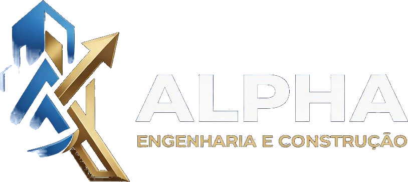
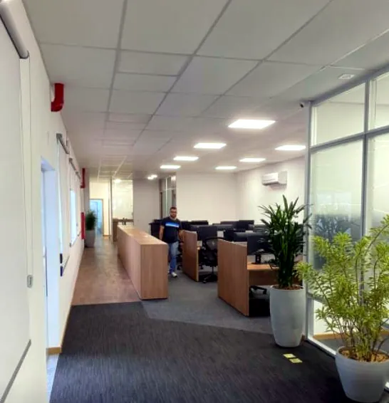

Cartão numerado (claro)
Filete dourado no topo, ícone na moldura padrão e número vazado.

Mantém a alma da marca (azul marinho profundo, dourado e branco, planta técnica, skyline e curvas douradas) e corrige o que a apresentação tinha de ruído: textura suja, ícones 3D de estilos diferentes, texto justificado e fotos com bordas irregulares.
Todos os valores vêm de assets/css/tokens.css. Alterou lá, muda aqui e no site.
Azul marinho em camadas como base. Dourado em cor chapada e em filetes finos; gradiente só em linhas e selos, nunca em blocos grandes. Azul do logo apenas como acento.
--gold-line · filetes e divisores--gold-seal · selos e botão principalnavy-800 → navy-950 · cartões escurosMontserrat em títulos e corpo, com títulos fortes. Playfair Display itálico só em uma palavra de destaque por título. Texto corrido sempre alinhado à esquerda, medida de leitura de até 62 caracteres. Fontes hospedadas localmente (.woff2).
Display · Montserrat 800 · clamp(36px → 68px)Engenharia que constrói resultados.
H2 · Montserrat 700 · clamp(28px → 44px)Obras que comprovam o nosso padrão.
H3 · Montserrat 700 · clamp(18px → 22px)Laboratório ISO 7 para produção de fármacos injetáveis
Lead · Montserrat 400 · 16–18pxProjetos e obras civis, industriais, comerciais e hospitalares, com gestão baseada no PMI.
Corpo · Montserrat 400 · 16px / 1.65Atuamos com gestão baseada no PMI, aplicando boas práticas de iniciação, planejamento, execução, monitoramento e encerramento para garantir controle e previsibilidade.
Rótulo · Montserrat 600 · 12px · caixa alta · 0.14emPrincipais características
Destaque · Playfair Display 500 itálicoEngenharia que constrói resultados. E resultados que constroem o futuro.
Altura mínima de 48px (44px no tamanho pequeno). Botão dourado para a ação principal (sempre WhatsApp); contorno para a secundária.
Um único conjunto de linha (traço 1.5, cantos arredondados) em dourado, sempre na mesma moldura: quadrado arredondado de 14px de raio com borda dourada a 38%. SVG embutido no HTML, sem API externa.
Camadas de azul com gradiente suave, grade de planta técnica a 5% de opacidade, skyline vetorial a 4% e curvas douradas finas em SVG que se movem em parallax. Sem textura de ruído.
Divisor: linha de luz dourada com cruz de brilho no centro.
Fotos reais das obras, sempre com raio de 20px, sem borda branca, recorte padronizado e leve correção de tom. Quando há texto por cima, degradê azul marinho de baixo para cima.

Texto sobre foto sempre com degradê
--r-lg) em todas as fotosSeções claras (--surface-light) dão respiro entre blocos escuros: usadas em Sobre + Serviços e em O Padrão Alpha.
Filete dourado no topo, ícone na moldura padrão e número vazado.
Usado em Missão, Visão e Valores, ligados por setas.
Fundo navy translúcido, borda sutil que acende no hover.
Marcador dourado na linha vertical.
--r-sm 10px--r-md 14px--r-lg 20px--r-xl 28px--shadow-md--shadow-lg--glow-goldmovimentoEntrada ao rolar 0.9s, ease-out-expo. Tudo desligado com prefers-reduced-motion.Usado exatamente como está, sem redesenho nem recoloração. Esta versão foi recortada da apresentação; substitua pelo arquivo original (PNG transparente ou SVG) assim que possível.
favicon